공유압기능사 (2005-10-02 기출문제)
1과목: 임의구분
1. 유압에 비하여 압축공기의 장점이 아닌 것은?
- 안전성
- 압축성
- 저장성
- 신속성(동작속도)
(정답률: 54%)

2. 유압장치에서 릴리프밸브의 역할은?
- 유체에 압력을 증가시키는 압력제어밸브이다.
- 유체의 유로의 방향을 변환시키는 방향전환밸브이다.
- 유체의 압력을 일정하게 유지시키는 압력제어밸브이다.
- 유압장치에서 유체의 압력을 감소시키는 감압밸브이다.
(정답률: 84%)
3. 베인펌프에서 유압을 발생시키는 주요부분이 아닌 것은?
- 캠링
- 베인
- 로우터
- 인어링
(정답률: 69%)
4. 다음은 공압실린더의 응용회로이다. 푸시버튼 스위치를 눌렀다 놓으면 실린더는 어떻게 작동되는가?
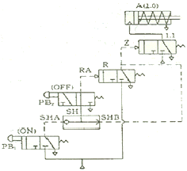
- 스위치 PB1를 누르면 실린더가 작동되지 않는다.
- 스위치 PB1를 누르면 실린더가 전진하고 놓으면 후진한다.
- 스위치 PB2를 눌렀다 놓으면 실린더가 전지상태를 유지한다.
- 스위치 PB2를 눌렀다 놓으면 실린더가 후진상태를 유지한다.
(정답률: 39%)
5. 회전속도가 높고 전체 효율이 가장 좋은 펌프는 어느 것인가?
- 축방향 피스톤식
- 베인펌프식
- 내접기어식
- 외접기어식
(정답률: 61%)
6. 밸브의 변환 및 피스톤의 완성력에 의해 과도적으로 상승한 압력의 최대값을 무엇이라고 하는가?
- 크래킹 압력
- 서지 압력
- 리시이트 압력
- 배압
(정답률: 86%)
7. 다음 중 유압회로에서 주요밸브가 아닌 것은?
- 압력제어밸브
- 회로제어밸브
- 유량제어밸브
- 방향제어밸브
(정답률: 80%)
8. 공압용 방향전환 밸브의 구멍(port)에서 ‘EXH'가 나타내는 것은?
- 밸브로 진입
- 실린더로 진입
- 대기로 방출
- 탱크로 귀환
(정답률: 76%)
9. 체적효율이 가장 좋은 펌프는?
- 기어펌프
- 베인펌프
- 피스톤펌프
- 로우터리 펌프
(정답률: 62%)
10. 유압작동유의 성질 중에서 가장 중요한 것은 무엇인가?
- 점도
- 효율
- 온도
- 산화안정성
(정답률: 79%)
11. 아래와 같이 1개의 입력포트와 1개의 출력포트를 가지고 입력포트에 입력이 되지 않은 경우에만 출력포트에 출력이 나타나는 회로는?
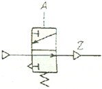
- NOR회로
- AND회로
- NOT회로
- OR회로
(정답률: 73%)
12. 다음 그림에서 맞는 명칭은?
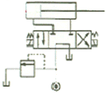
- 감속회로
- 차동회로
- 로킹회로
- 정토오크 구동회로
(정답률: 73%)
13. 아래의 공기압회로 도명기호의 명칭은?
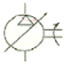
- 정용량형 공기압 모터
- 정용량형 공기압축기
- 가변용량형 공기압모터
- 가변용량형 공기압축기
(정답률: 43%)
14. 유압장치에 사용되는 관(pipe)이음 종류에 속하지 않는 것은?
- 나사이음(screw joint)
- 플랜지형이음(flange joint)
- 플래어형이음(flare joint)
- 가스켓이음(gasket joint)
(정답률: 57%)
15. 다음 기호 중 오리피스를 나타내는 기호는 무엇인가?
(정답률: 71%)
16. 공압발생 장치의 구성상 필요 없는 장치는?
- 방향제어 밸브
- 에어쿨러
- 공기압축기
- 에어드라이어
(정답률: 73%)
17. 다음의 공압회로도는 공압 복동실린더의 자동복귀회로이다. 1, 2 스위치가 계속 작동되어 있을 경우, 복동실린더의 작동 상태를 올바르게 설명하고 있는 것은?
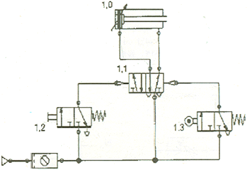
- 전진 위치에 있는 1.3 공압 리밋 스위치가 작동되면 복동 실린더는 후진하여 정지한다.
- 전진 위치에 있는 1.3 공압 리밋 스위치가 작동되면 복동 실린더는 후진 한 후 동일한 작동을 반복한다.
- 전진 위치에 있는 1.3 공압 리밋 스위치가 작동된 후 복동 실린더는 정지한다.
- 전진 위치에 있는 1.3 공압 리밋 스위치가 작동된 후 일정 시간 경과 후 후진한다.
(정답률: 46%)
18. 그림의 기호가 나타내는 것은?
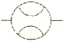
- 압력계
- 차압계
- 유압계
- 유량계
(정답률: 58%)
19. 점성이 지나치게 크면 어떤 현상이 생기는가?
- 마찰열에 의한 열이 많이 발생한다.
- 부품사이에서 윤활작용을 못한다.
- 부품의 마모가 빠르다.
- 각 부품 사이에서 누설손실이 크다.
(정답률: 56%)
20. 다음은 공유압장치에 사용되는 부품의 기호이다. 해당되는 명칭은?
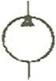
- 유압펌프
- 유압모터
- 공압펌프
- 공압모터
(정답률: 68%)
2과목: 임의구분
21. '액체에 전해지는 압력은 모든 방향에 동일하며 그 압력은 용기의 각 면에 직각으로 작용한다'는 것은?
- 보일의 법칙
- 파스칼의 원리
- 주울의 법칙
- 베르누이의 정리
(정답률: 74%)
22. 유압펌프에서 축 토오크를 Tp kg-cm, 축동력을 L 이라할 때 회전수 n rev/sec를 구하는 식은?
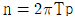
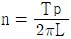
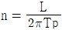
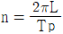
(정답률: 41%)
23. 다음에 설명되는 요소의 도면기호는 어느 것인가?
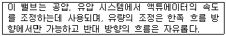
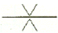
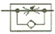
(정답률: 80%)
24. 그림의 기호가 나타내는 것은?
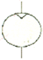
- 진공펌프
- 유압펌프
- 공기압펌프
- 공기압모터
(정답률: 47%)
25. 피스톤의 직경과 로드의 직경이 같은 것으로 출력축인 로드의 강도를 필요로 하는 경우에 자주 이용되는 것은?
- 단동실린더
- 램형실린더
- 다이어프램 실린더
- 양로드 복동 실린더
(정답률: 52%)
26. 유압유의 성질이 아닌 것은?
- 비열이 클 것
- 10%희석되어도 유압유와 적합성이 있을 것
- 비점이 높을 것
- 비중이 클 것
(정답률: 52%)
27. 다음의 진리표에 따른 논리 신호로 맞는 것은? (입력신호 : a 와 b , 출력신호 : c )
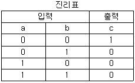
- OR회로
- AND회로
- NOR회로
- NAND회로
(정답률: 66%)
28. 증압회로를 사용하는 기계는?
- 프레스와 잭
- 프레스와 터어빈
- 잭과 내연기관
- 잭과 외연기관
(정답률: 53%)
29. 송출압력이 200[kg/cm2]이며, 100[ℓ/min]의 송출량을 갖는 레이디얼 플렌저 펌프의 소요동력은 얼마인가? (단. 펌프효율은 90%이다.)
- 39.48 PS
- 49.38 PS
- 59.48 PS
- 69.38 PS
(정답률: 60%)
30. 공압 소음기의 고비조건이 아닌 것은?
- 배기음과 배기저항이 클 것
- 충격이나 진동에 변형이 생기지 않을 것
- 장기간의 사용에 배기저항 변화가 작을 것
- 밸브에 장착하기 쉬운 콤팩트한 형상일 것
(정답률: 82%)
31. 220[V], 40[W]의 형광등 10개를 4시간 동안 사용했을 때의 소비전력량은?
- 8.8[kWh]
- 0.16[kWh]
- 1.6[kWh]
- 16[kWh]
(정답률: 73%)
32. 그림과 같이 자석을 코일과 가까이 또는 멀리하면 검류계의 지침이 순간적으로 움직이는 것을 알수 있다. 이와같이 코일을 관통하는 자속을 변화시킬때 기전력이 발생하는 현상을 무엇이라 하는가?
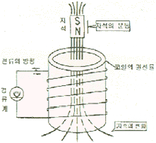
- 드리프트
- 상호유도
- 전자유도
- 정전유도
(정답률: 81%)
33. 논리 기호에서 입력이 있으면 출력이 없고. 입력이 없으면 출력이 있는 게이트는?
- OR
- AND
- NOR
- NOT
(정답률: 71%)
34. 다음 중 단자가 3개가 아닌 것은?
- 사이리스터
- 트라이맥
- 다이오드
- MOSFET
(정답률: 70%)
35. 전류가 하는 일이 아닌 것은?
- 발열 작용
- 자기 작용
- 화학 작용
- 증폭 작용
(정답률: 46%)
36. 다음 중 3상 유도 전동기는?
- 권선형
- 콘덴서 기동형
- 분상 기동형
- 세이딩 코일형
(정답률: 55%)
37. 주파수 60[kHz], 인덕턴스 20[μH]인 회로에 교류전류 I=㏐sinωt[A]를 인가했을 때 유도 리액턴스 XL[Ω]은?
- 1.2π
- 2.4π
- 36π
- 1.2x103π
(정답률: 49%)
38. 다음 불대수
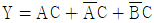
를 간소화 하면?- C
- AB
- AC
- B
(정답률: 59%)
39. 전류계와 전압계를 회로에 동시에 연결할 때 접속방법이 맞는 것은?
- 전류계-병렬, 전압계-직렬
- 전류계-병렬, 전압계-병렬
- 전류계-직렬, 전압계-직렬
- 전류계-직렬, 전압계-병렬
(정답률: 76%)
40. 대칭 3상 교류의 Y결선에서 선간 전압 VL과 상전압 Vp의 관계는?
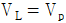
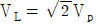
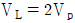
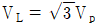
(정답률: 69%)
3과목: 임의구분
41. 농형 유도전동기의 기동법으로 맞지 않는 것은?
- 2차 저항법
- 전전압 기동법
- Y-△ 기동법
- 기동 보상기법
(정답률: 48%)
42. 유접점 시퀀스제어 회로의 특징으로 맞지 않는 것은?
- 수명은 반영구적이다.
- 진동, 충격에 약하다.
- 전기적 소음이 크다.
- 주회로와 동일한 전원을 사용한다.
(정답률: 53%)
43. 공기 중에서 자기장의 크기가 10[A/m]인 점에 8[㏝]의 자극을 둘 때, 이 자극이 작용하는 자기력은 몇 [N]인가?
- 80[N]
- 8[N]
- 1.25[N]
- 0.8[N]
(정답률: 71%)
44. 다음 직류의 대 전류 측정에 알맞은 것은?
- 회로 시험기
- 반조 검류계
- 전자식 검류계
- 직류 변류기
(정답률: 57%)
45. 가장 최근 기기의 소형화, 고기능화, 저렴화, 고속화 및 프로그램 수정의 용이함을 실현한 시퀀스제어는?
- 릴레이 시퀀스
- PLC 시퀀스
- 로직 시퀀스
- 닫힌 루프 제어
(정답률: 83%)
46. 대칭형 물체의 1/4을 잘라내고 도면의 반쪽을 단면으로 나타낸 것은?
- 온(전)단면도
- 한쪽(반) 단면도
- 부분 단면도
- 계단 단면도
(정답률: 68%)
47. 도면에서 척도란에 NS로 표시된 것은 무엇을 뜻하는가?
- 축척
- 나사를 표시
- 배척
- 비례척이 아닌 것을 표시
(정답률: 84%)
48. 다음 나사 기호 중 KS 관용 평행 나사 기호는?
- PT
- PF
- PS
- SM
(정답률: 56%)
49. 보기와 같이 입체도를 3각법으로 투상 한 것으로 가장 적합한 것은?(오류 신고가 접수된 문제입니다. 반드시 정답과 해설을 확인하시기 바랍니다.)
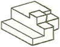
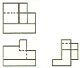
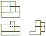
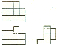
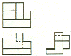
(정답률: 42%)
50. 보기 용접기호의 설명으로 올바른 것은?
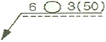
- 심용접으로 슬롯부의 폭이 6mm
- 점용접으로 용접수가 3개
- 심용접으로 용접수가 6개
- 점용접으로 용접길이 50mm
(정답률: 46%)
51. 보기 입체도의 화살표 방향이 정면일 때, 좌측면도로 적합한 것은?
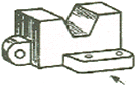
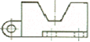
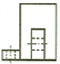
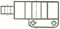
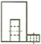
(정답률: 83%)
52. 다음 배관도시기호에서 밸브가 닫힌 상태를 도시한 것은?
(정답률: 72%)
53. 다음 중 전동용 기계요소가 아닌 것은?
- 벨트
- 로프
- 코터
- 링크
(정답률: 52%)
54. 재료에 하중이 가해져 어느 한도 이상이 되었을 때 재료에 영구 변형이 생기는 현상은?
- 탄성
- 인성
- 소성
- 연성
(정답률: 59%)
55. 온도의 변화에 따라 재료 내부에 생기는 응력은?
- 경사응력
- 크리프응력
- 압축응력
- 열응력
(정답률: 74%)
56. 베어링 호칭번호6203의 안지름 치수는 얼마인가?(오류 신고가 접수된 문제입니다. 반드시 정답과 해설을 확인하시기 바랍니다.)
- 10mm
- 12mm
- 15mm
- 17mm
(정답률: 44%)
57.
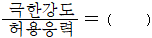
위 식에서 ( )에 들어갈 적합한 용어는?- 안전율
- 파괴강도
- 영률
- 사용강도
(정답률: 70%)
58. 미터나사에 관한 설명으로 잘못된 것은?
- 기호는 M으로 표시한다.
- 나사산의 각도는 60°이다.
- 호칭은 바깥지름을 인치(inch)로 표시한다.
- 피치는 산과 산사이를 밀리미터(mm)로 표시한다.
(정답률: 67%)
59. 회전운동을 직선운동으로 바꿀 때 사용되는 기어는?
- 스퍼기어
- 랙 와 피니언
- 내접기어
- 헬리컬기어
(정답률: 67%)
60. 베어링에서 오일 시일의 용도를 바르게 설명한 것은?
- 오일 등이 새는 것을 방지하고 물 또는 먼지 등이 들어가지 않도록 하기 위함
- 축 방향에 작용하는 힘을 방지하기 위함
- 베어링이 빠져 나오는 것을 방지하기 위함
- 열의 발산을 좋게 하기 위함
(정답률: 67%)